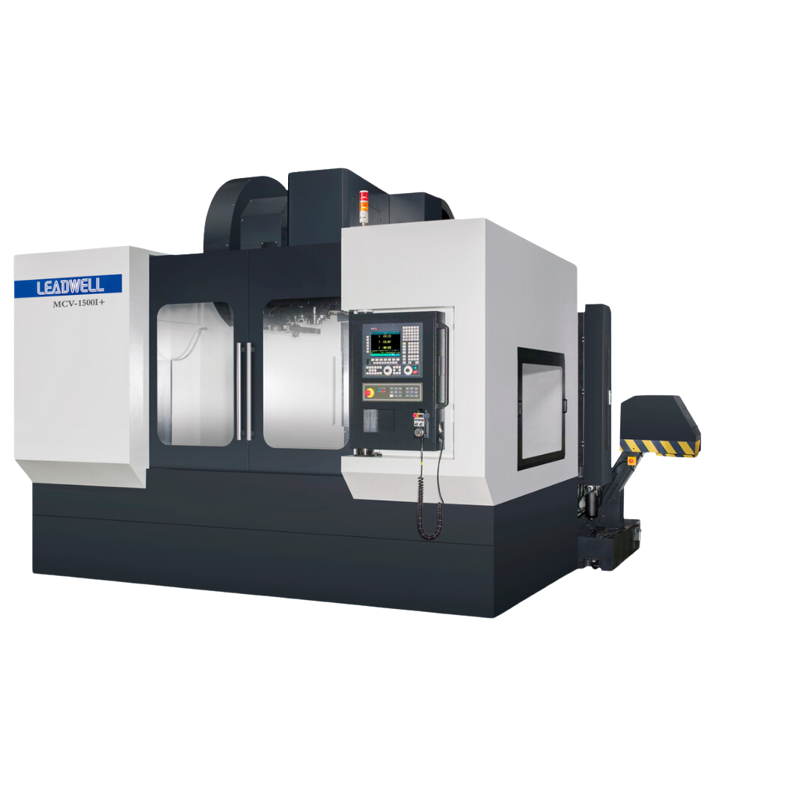
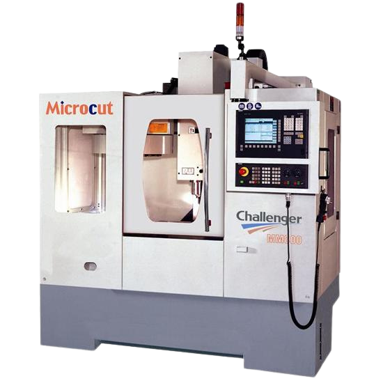
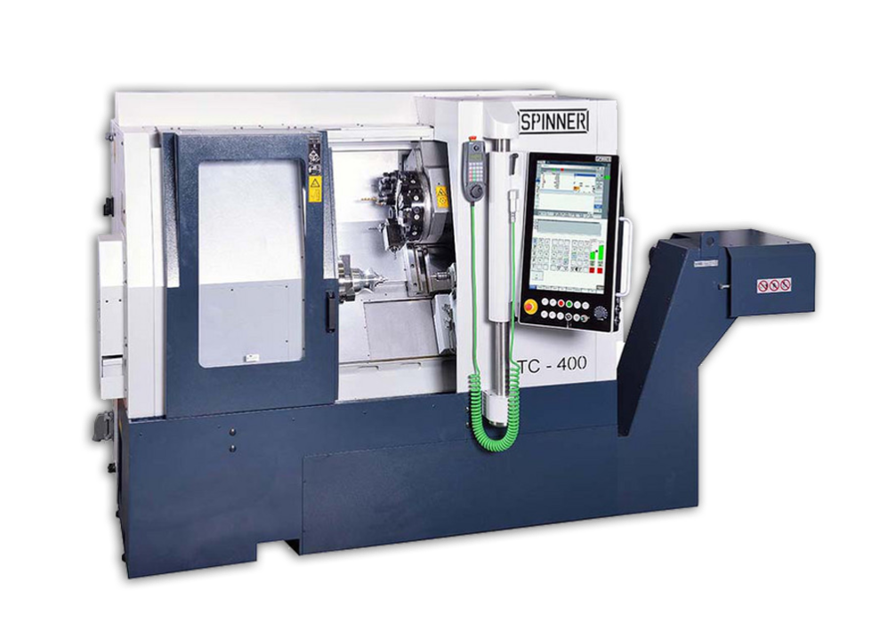
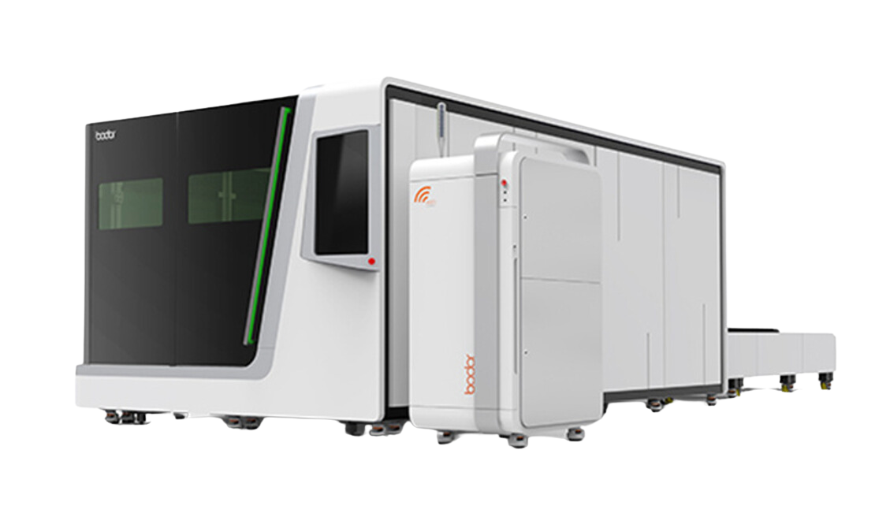
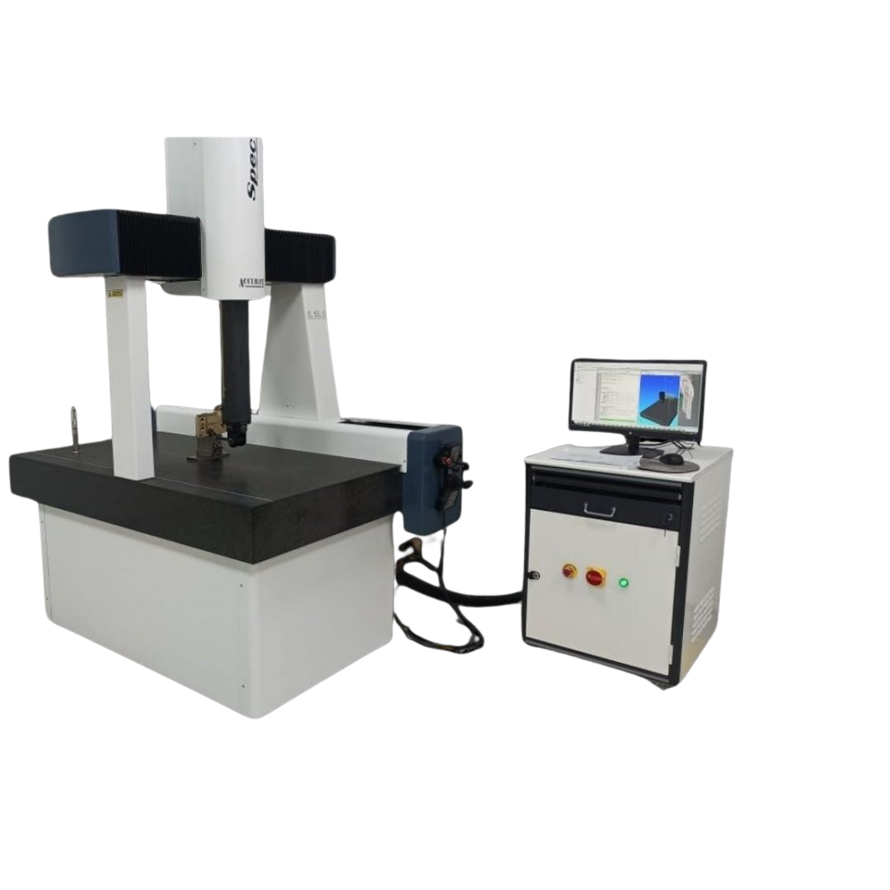
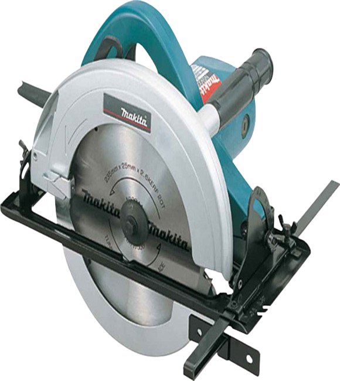
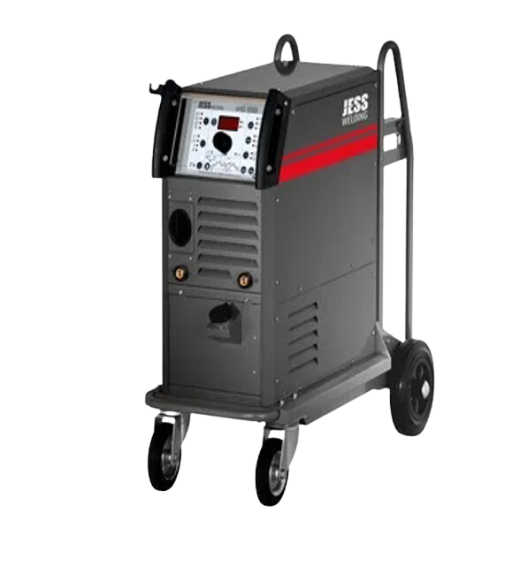
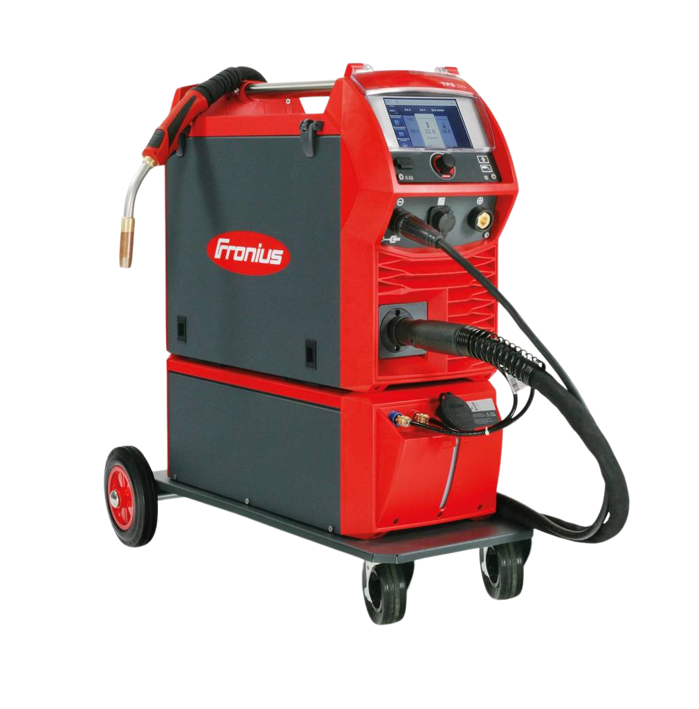
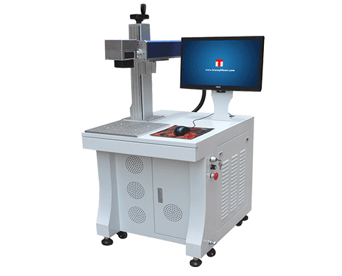

Firmamız, ürün geliştirme alanında çeşitli hizmetler sunmaktadır ve özellikle savunma sektörüne odaklanarak, işleme, kaynak ve montaj gibi kritik aşamalarda uzmanlığa sahiptir. Sistemler arası entegrasyon konusundaki bilgi birikimimizle, müşterilerimize kapsamlı çözümler sunmayı amaçlıyoruz. Bilimsel ve sistematik bir yaklaşım benimseyerek, küresel pazarda hızlı, maliyet-etkin ve yüksek kaliteli üretim standartlarını sürdürüyoruz. Müşteri memnuniyetini ön planda tutarak, uzun vadeli iş ilişkileri kurma ve sürdürme misyonumuzu sürdürüyoruz.
Şirketimizde kullandığımız Hermle dik işleme merkezi, yüksek hassasiyet ve verimlilik sunan ileri seviye bir CNC tezgahıdır. Milimetrenin binde biri seviyesinde hassasiyet, sağlam yapı, yüksek işleme hızı ve çok eksenli hareket kabiliyeti ile karmaşık ve hassas parçaların üretiminde yüksek performans sağlar.
LEADWELL MV 1100 S 3 Axis

LEADWELL MV 1100 S 3 Eksen dik işleme merkezi, sağlam yapısı ve yüksek işleme hızı ile dikkat çeker. Yüksek hassasiyet sunarak karmaşık ve detaylı parçaların üretiminde üstün performans sağlar. 3 eksenli hareket kabiliyeti ile çeşitli uygulamalarda esneklik sunar.
MICROCUT VERTICAL MACHINING 3 AXIS

MICROCUT 3 Eksen dik işleme merkezi, sağlam yapısı ve yüksek hassasiyeti ile öne çıkar. Gelişmiş işleme kapasitesi ve hızlı operasyonları sayesinde karmaşık ve detaylı parçaların üretiminde mükemmel performans sunar. 3 eksenli hareket kabiliyeti ile çeşitli üretim ihtiyaçlarına uygun esneklik sağlar.
TC400 SERIES LATHE

TTC 400 serisi torna makinesi, yüksek hassasiyet ve verimlilik sunan bir CNC tezgahıdır. Milimetrenin binde biri seviyesinde hassasiyet sağlar ve sağlam yapısı ile dikkat çeker. Yüksek işleme hızı ile karmaşık ve hassas parçaların üretiminde üstün performans sergiler.
BODOR P3 6KW 1500X3000 LASER CUTTING

BODOR P3 6KW 1500X3000 Lazer Kesim Makinesi, yüksek hassasiyet ve hız ile geniş formatta kesim yapabilen ileri teknoloji bir cihazdır. 6KW lazer gücü sayesinde, metal ve alaşımlar gibi çeşitli malzemeleri kolaylıkla keser. 1500x3000 mm çalışma alanı, büyük ölçekli projelerde esneklik sağlar. Endüstriyel uygulamalarda mükemmel performans sunar.
DURMA AD-S 30135 BENDING MACHINE
DURMA AD-S 30135 Büküm Makinası, yüksek performans ve hassasiyetle çeşitli metallerin büküm işlemlerini gerçekleştiren son teknoloji bir cihazdır. 30135 mm büküm kapasitesi ile geniş formatlarda esneklik sağlar. Sağlam yapısı ve kullanıcı dostu arayüzü sayesinde, endüstriyel uygulamalarda üstün performans sunar ve mükemmel sonuçlar elde edilmesini sağlar.
CMM MEASURING DEVICE

CMM, üç boyutlu nesnelerin boyutlarını mikron hassasiyetinde ölçen bir cihazdır. Otomotiv ve havacılık gibi sektörlerde kullanılır, dokunmatik ve lazer problarla çalışır, otomatik olarak ölçüm yapar ve sonuçları dijital olarak kaydeder.
BAND SAW CUTERAL
Yüksek kesim kapasitesine sahip, güçlü ve dayanıklı bir testeredir. Metal, ahşap ve plastik gibi çeşitli malzemeleri hassas ve hızlı bir şekilde keser.
MAKITA- CIRCULAR SAW

Yüksek kesim kapasitesine sahip, güçlü ve dayanıklı bir testeredir. Metal, ahşap ve plastik gibi çeşitli malzemeleri hassas ve hızlı bir şekilde keser.
JESS WELDING- TIG

JESS WELDING TIG Kaynak Makinesi, yüksek hassasiyet ve çok yönlülük sunarak çelik, alüminyum ve paslanmaz çelik gibi çeşitli malzemelerde mükemmel kaynak kalitesi sağlar. Kullanıcı dostu arayüzü ve enerji verimliliği ile otomotiv, havacılık ve enerji sektörlerinde ideal bir çözümdür.
FRONIUS-MIG/MAG

FRONIUS MIG/MAG Kaynak Makinesi, 600 A’ya kadar yüksek güç kapasitesi ile çelik, paslanmaz çelik ve alüminyum uygulamalarında en yüksek talepleri karşılar. Kullanıcı dostu dokunmatik ekranı ve modüler yapısı sayesinde, her türlü kaynak ihtiyacına kolayca uyum sağlar ve yüksek kaynak kalitesi sunar.
LASER MARKING
300mmX300mm

Gelişmiş lazer teknolojisi ile metal, plastik ve diğer malzemeler üzerinde net ve dayanıklı işaretlemeler yaparak, ürünlerinize profesyonel bir görünüm kazandırır. Endüstriyel standartlara uygun olarak tasarlanan sistemlerimiz, hızlı ve verimli üretim süreçleri için idealdir.